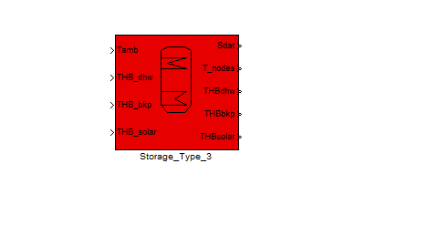
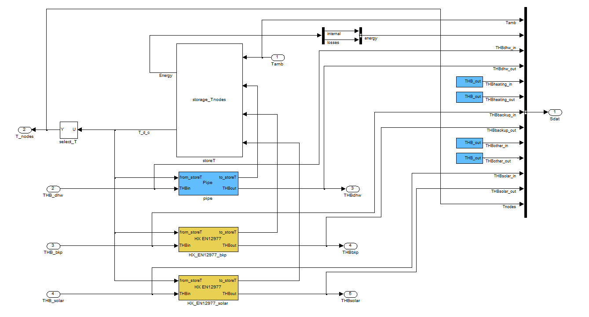
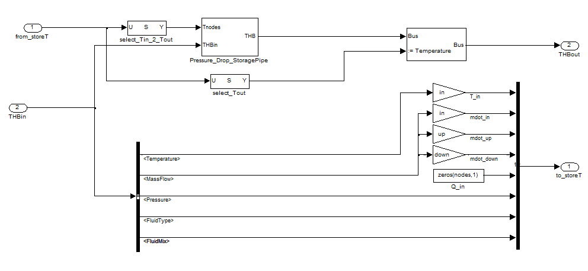
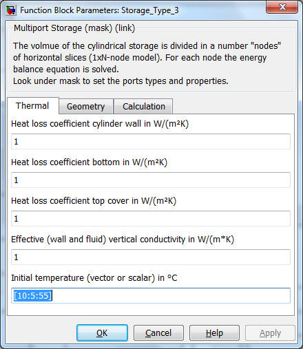
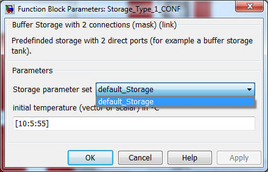
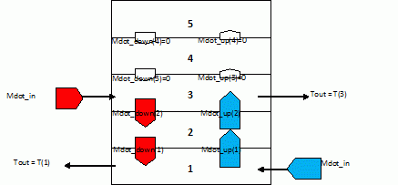

Storage_Type_1
Storage_Type_2
Storage_Type_3
Storage_Type_4
Storage_Type_5
Path: CARNOT/Storage/Thermal
Purpose
Multiport model for storage with heat exchanger(s)
and direct connections.
Description
The basic concept is a multiport one-dimensional model. The storage is connected
to other CARNOT components by a variable number of port blocks.

Storage model example with 2 heat exchangers and 1 pipe connection, a typical
domestic hot water cylinder for solar applications.

“Look under Mask” of the
Storage_Type_3 model.
The pipe connection and the heat exchangers can be seen.
These ports "translate" the energy flow in the THB bus to the energy and mass
balance of the storage.
The type of port can be a pipe ending at the storage wall and releasing the fluid in the storage
(see Pipe). Or
it can be
a
heat exchanger charging
or discharging the storage with an energy flow (see
Heat_Exchangers). Pressure drop and pressure changes due to static height
are calculated in the ports.

Principle of a port, example of a pipe connection
Parameters and Dialog Box
The parameters
represent the
geometric and thermodynamic data of the storage.
The top mask
defines also the number of ports,
the number of temperature sensors and the
number of nodes.

The initial temperature can be a scalar value which means one temperature for
all nodes. It may also be a vector with the length “nodes”. In this case each
node is initialized with its individual temperature. The first element in the
vector is the temperature for the bottom node.
Geometric values, intial temperatures and the positions of the connections are
determined in the callback function Carnot_StorageTypeN_CallBacks.m
Configurated storage models
Some storages are predifined using the the Storage_Type_N_CONF models. Here the
parameters are defined in a structure (variable name s). The different parameter
sets are saved in the /parameter_set folder of the different storage types. The
standard file is the "default_Storage.mat" file. To create new storage tanks you
may change the values in the structure and save the variable under a different
name in the /parameter_set folder. All existing parameter sets appear in the
pull-down menue of the storage mask.

Ports
Parameters of the ports are described in the chapters of the ports:
Pipes
Heat_Exchangers
Advanced Topics:
S-Function storage_Tnodes
This s-function is the basic model of the storage. It divides the storage in N
nodes where node 1 is at the bottom and node N at the top.
The
Port_to_Storage vector
has the following elements:
|
[T_in_1, T_in_2, … T_in_N] |
Vector with N elements: temperatures
of mass flows entering nodes |
|
[mdot_in_1, T_mdot_in_2, … mdot_in_N] |
Vector with N elements: mass flows
entering nodes |
|
[mdot_up_1, mdot_up_2, … mdot_up _(N-1)] |
Vector with N-1 elements: internal
mass flows upwards due to pipe connections |
|
[mdot_down_1, mdot_down_2, … mdot_down
_(N-1)] |
Vector with N-1 elements: internal
mass flows downwards due to pipe connections |
|
[Qdot_1, Qdot_2, … Qdot_N] |
Vector with N-1 elements: power
entering node (negative for cooling) due to heat exchangers
|
|
pressure |
Pressure of fluid (relevant only for
pipe connections, -9999 for heat exchangers) |
|
Fluid type |
Fluid type
(relevant only for pipe connections,
-9999 for heat exchangers)
see chapter
2_Basic_Concepts for details |
|
Fluid mixture |
Fluid mixture
(relevant only for pipe connections, -9999 for heat exchangers)
see chapter
2_Basic_Concepts for details |
Inputs
|
Port 1:
|
Ambient temperature in °C |
|
Port 2:
|
Port_to_Storage Vector |
|
Port 3:
|
Port_to_Storage Vector |
|
... |
|
Port N:
|
Port_to_Storage Vector |
Outputs
|
Port 1:
|
Energy balance of the storage:
|
|
|
1 - internal change of
energy in J
|
|
|
2 - thermal losses in J
|
|
Port 2:
|
Vector with the node
temperatures (first temperature is bottom node, last temperature is the top
node). This temperature vector is
given back to the port block where the original THB
is reassembled with the new values for the temperature. |
Mathematical Model
The storage is divided into "NODES" nodes. An energy balance for
every node is done using the following differential equation.
This equation is derived from the energy balance with the finite volume approach
[Patankar 1980]. For the massflow the upwards scheme is used (entering massflow
is evaluated with the temperature of the node above). For the thermal
conductivity central differences are used.
(rho*cp)
* dT/dt =U * Aloss / Vnode * (Tamb
- Tnode)
+ cond
/ dh2 * (Tnode_above - Tnode) +
cond / dh2 * (Tnode_below - Tnode)
+ mdot_up * cp
/ Vnode * (Tnode_below - Tnode)
+ mdot_down
* cp / Vnode * (Tnode_above - Tnode)
+ Uhx * Ahx
/ Vnode * (Thx_node - Tnode)
|
symboll
|
used forr
|
unitt
|
|
Alosss
|
surface area for losses
of one storage nodee
|
m2
|
|
Ahxx
|
surface area of heat
exchanger per storage nodee
|
m2
|
|
l
|
effective axial thermal
conductionn
|
W/(mK*))
|
|
cp
|
heat capacityy
|
J/(kgK*))
|
|
dh
|
distance between two
nodess
|
m
|
|
mdott
|
mass flow rate
("up" or "down" is zero according to sum of flowrates))
|
kg/ss
|
|
r
|
densityy
|
kg/mm3
|
|
T
|
temperaturee
|
K
|
|
t
|
Timee
|
s
|
|
Ulosss
|
heat loss coefficientt
|
W/(m2*K)
|
|
Uhxx
|
heat transfer
coefficient of heat exchangerr
|
W/(mm2*K)
|
|
Vnodee
|
node volumee
|
m3
|
The number of nodes is
variable and can be set as a parameter of the S-function from SIMULINK..For fast calculations a number of 10 nodes is normally sufficient. An accurate
representation of the storage tank is achieved with 50 to 100 nodes..
For this node-scheme you have to obey the following boundary condition for the
Courant numberr c when using fixed timestep
solverss. Adapt the
timestep dt accordingly::
c =
dt*v/dhh
<= 1
For most exact resultsswith variable timestep solverssthe maximum time step
dt should be 300 seconds..
The effective axial
thermal conductivityy in
W/m/KK is calculated by means of the equation::
l
= (l_wall*Awall+l_fluid*Astorage+l_heatex*Aheatex)/
((Awall+Astorage+Aheatex)
|
symbol
|
used for
|
Unit
|
|
Awall
|
cross-section area of
walll
|
m2
|
|
Astorage
|
cross-section area of
storagee
|
m2
|
|
Aheatex
|
cross-section area of
heat exchangerr
|
m2
|
|
l_wall
|
thermal conductivity of
wall materiall
|
W/(m*K))
|
|
l__fluid
|
thermal conductivity of
fluid in storagee
|
W/(m*K))
|
|
l_heatex
|
thermal conductivity of
heat exchanger materiall
|
W/(m*K))
|
Pipe connections and
internal massfloww

Pipes are connected to the nodes of the model. They are defined by the inlet and
outlet position. In the exampel above the direct charging pipe and the direct
discharing pipe are connected to node 1 and 3..
In the massflow balance in the storage model flows upwards and downwards are
seperated. The index n of the massflows upwards and downwards refer to volume
segment n below..

The s-function storage_Tnodes.c checks for all nodes except the top one if there
is a massflow downwards entering from the node above. Additionally for all nodes
execept the bottom node (index 1) the s-function checks if there is a massflow
upwards from the node below..
Entering massflows, the massflows upwards and downwards are defined by the pipe
connections. The s-function sums up all massflow downwards and upwards to
determine the resulting massflow (upwards or downwards)..
Inversed
Thermocline
From the differential equation it may occur that some lower nodes have a higher
temperature than the upper nodes. This is a typical situation when heating the
storage with an immersed heat exchanger at the lower part. To avoid this
unrealistic situation, an algorithm for the elimination of the inversed
thermocline is included in the model. Two nodes are mixed if the lower one has a
1e-4 K higher temperature than the upper one..
Measurement Points
As wee wanttto know the temperature at fixed places inside the storage, a number
of measurement points are placed at equidistant locations inside the storage,
no matter how many nodes are used for the calculation. The first temperature in
the output vector "Tnode" corresponds to the lowest measurement
point, rising numbers in upwards..
Note:: You may use this storage with MAX_PORT ports of any type (pipes, heat
exchangers). The inlet and outlet of the ports may be at the same height or at
different heights.. The maximum
number of ports (MAX_PORT) is defined in the s-function storage_Tnodes.c..
The maximum number of
ports MAX_PORT is limited to 10 in the acual version of CARNOT. You may change
the number by editing the c-code and compiling the file. See "Advanced
Topics: Creating S-Functions as c-mex Files"..
Examplees: seee
example_storage.mdll
Characteristics
of storage_Tnodees
Direct Feedthrough Noo
Sample
time
Inherited
from driving blockk
States
corresponding
to the number of nodess
Vectorized
Noo
Solvers
variable and fixed timestepp
Literature
Patankar: Numerical Heat Tansfer and Fluid Flow, 19800
Verification
-
verify_StorageTnodesEN12977lossess.m
- benchmark of storage losses according to EN 129777
-
verify_sfun_storage_heatexchanger.mm
- benchmark of the heat exchanger according to EN 129777
-
vaidate_sfun_storage_heatexchanger2.mm
-
hecks of all the heat exchanger types
-
verify_StorageTnodesPipe.m - energy balance check of the pipe connections